WOOCOMMERCE MULTI LEVEL REFERRAL PLUG-IN
The plugin is for Woocommerce store owners who want to increase their sale by using referral system
- Compatible with latest WordPress as well as Woocommerce versions.
- Easily configurable from Woocommerce settings.
- The user can set Store credit percentage globally product wise, category wise, or it can even be product specific.
- If the product level percentage is not defined, then, the category level percentage will be applied and if both, the product and the category level percentage is not defined then, global percentage will be applied. In case if the product is having multiple categories then, lowest/highest percentage among all the categories will be applied. You can choose whether lowest or highest should be applied, from the plugin settings.
- The Welcome credit points were only available for newly registered users. Now, existing users too will get the benefit of Welcome Credits on their first purchase. Administrator can choose this option between all users or can restrict it to newly registered users only.
- Ability to set validation period for credit points. After the validation period, the credit points will expire.
- Admin can set a number of days to send notification emails to the point expire. This will enable the user to have enough time for him/her to take appropriate action before the credits expire.
- Products can be excluded from the referral program.
- Admin can set monthly credit limit, and also there is an ability to set monthly redemption limit.
- Admin can set Auto join or manual join option. When it set to auto join option users will automatically joined to referral program after registration, and if it set to manual join then at the time of registration system will ask users to whether they wants to join referral program or not.
- Admin can see a complete list of registered users who have joined their referral program with their earned credit points.
- Various filter options are provided for searching, so the admin can search users by Name, Email, and Joining date range.
- The multi-level user list view is provided so; admin can see the hierarchy of users.
- Admin can see order wise credit points earned by the users.
- The log is maintained for earned credits as well as redeemed points for each order. Admin can see this log within the Admin panel.
- Various email templates are provided to the Admin to customize their email templates as required. We have provided placeholders to replace user information at the runtime.
- The Plugin has an ability to join referral program for users who are already registered on the site.
- Users can see their earned and redeemed credit point within their account area.
- Users can also invite others by entering their email addresses.
- Shortcodes to show "Invite Friend" form and "Credit point details".
Now credit point information and invite friend form can be show anywhere on wordpress pages. These shortcodes will show information of users who are logged in.
[wmc_invite_friends] = this shortcode will show invite friend form.
[wmc_show_credit_info] = this will show logged in user credit point information.
-
There is one more mod where we have added a new shortcode "[wmc_show_affiliate_info]" to show affiliate user information in tabular format for customers who are already logged in. A customer can see a list of users who have joined their referral program using his/her referral code. This shortcode can be used anywhere on any given page and post, just as in - [wmc_invite_friends] and [wmc_show_credit_info] shortcodes.
- The Referral Tab is now on the My Account page
This tab has been added to the WooCommerce 'My Account' page.
All plugin related information will be displayed here itself now. Previously this was within the WooCommerce Dashboard.
Following this one can now view entities like the Invitation form, Affiliate information as well as the Credit points information there itself henceforth.
Also, the users can now see all their referral activity inside one separate tab - "Referral".
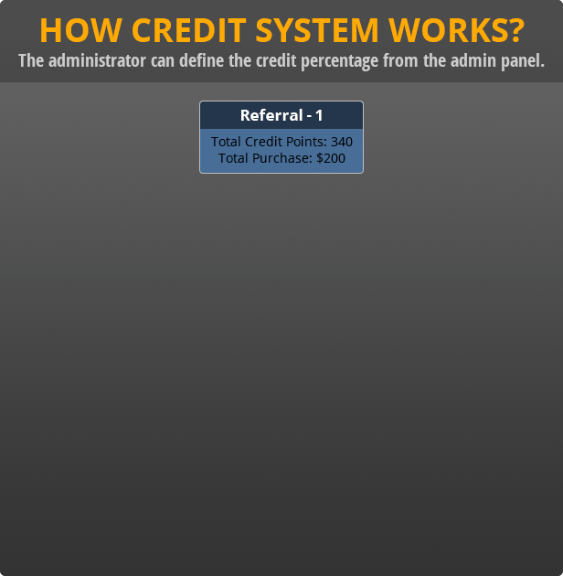
-
The administrator can define the credit percentage from the admin panel.
-
When referral user buys any product from the woo-commerce store, the system will check if this user has any parent user. If this user has parent user then system will credit the points in
-
Friends join referral Program by using user’s referral Code and they can become the follower of the user who sent an invitation.
-
The credit points will be credited to user’s account according to defined percentage by admin on the purchase of goods.
-
g. suppose store owner configured 20% credits on total purchase, then credit point distribution will be made in following way.
The earned credit points can be redeemed while purchasing the goods in the woo-commerce store.
**This section describes how to install the plugin and get it working**
Manual installation
**Uploading in WordPress Dashboard**
-
Purchase the plugin and download the plugin files in zipping format.
-
Navigate to the ‘Add New’ in the plugins dashboard
-
Navigate to the ‘Upload’ area
-
Select `zip of plugin files` from your computer
-
Click ‘Install Now’
-
Activate the plugin in the Plugin dashboard
Using FTP
-
Purchase the plugin and download the plugin files in zipping format.
-
Extract the `zip` directory to your computer
-
Upload the plugin directory to the `/wp-content/plugins/` directory
-
Activate the plugin in the Plugin dashboard
The WordPress codex contains [instructions on how to install a WordPress plugin]
(http://codex.wordpress.org/Managing_Plugins#Manual_Plugin_Installation).
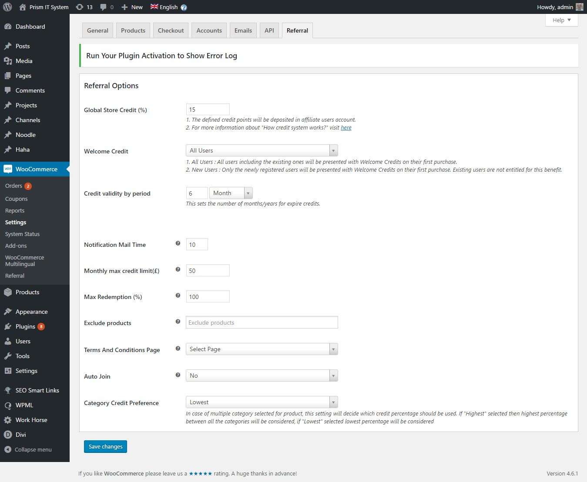
After the activation of plugin, you need to make some required configuration. Find the woo commerce menu from the left sidebar menu in WordPress admin panel. Inside this menu, you can find “Settings” menu. Clicking on this menu will open all the configuration settings for woo commerce. In the same page, you can find “Referral” Tab. Just click on that tab and do the following configuration.
-
Global Store Credit : Define credit point percentage here. Customers will get these percent credit points when purchase happens through their referrals.
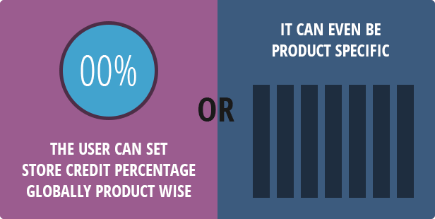
- Welcome Credit : Previously, the Welcome credit points were only available for newly registered users. Now, existing users too will get the benefit of Welcome Credits on their first purchase. Administrator can choose this option between all users or can restrict it to newly registered users only.
-
Product Level Credit : Go to wocommerce product module, select the product and edit it to add creadit percentage.
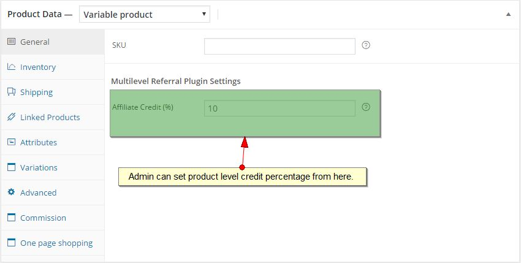
- Category Level Credit : Now, you can set credit point percentage for categories, and so percentage defined for category will be applicable for all the products within that category. If the product level percentage is not defined, then, the category level percentage will be applied and if both, the product and the category level percentage is not defined then, global percentage will be applied.
-
Credit Validity by period : The credit points will expire after this duration. The duration will be calculated from the date of earning credit points.
-
Notification Mail Time : Define the time in a number of days. Notification E-mail will be sent before the set number of days if the credit points are going to expire.
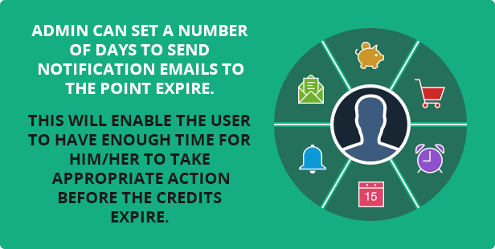
-
Monthly max credit limit ($) : Define maximum credit point limit. If you define this limit customers will not earn credit points beyond the defined limit.
-
Max redemption %: You can define the maximum limit for the redemption of points. E.g. If you set 50% then the customer will be allowed to redeem only 50% of the available points.
-
Exclude Products : If you want to exclude products from the referral program, then you can select those product/s from here.
-
Terms And Conditions Page : You can create separate terms and condition page for your referral program and select that page from here.
-
Auto Join : Select "Yes" if you want to users should have to join referral program automatically. By default it is set to "Yes".
- Category Credit Preference : In case if the product is having multiple categories then, lowest/highest percentage among all the categories will be applied. You can choose whether lowest or highest should be applied, from the plugin settings.
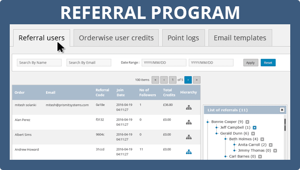
After the configuration, you can find the other plugin pages under the same Woocommerce Main menu. Here you can find “Referral” submenu. Clicking in this menu will open other pages of the plugin.
-
Referral Users. (The list of users who joined the referral program)
-
Otherwise User Credits (The credits earned by users for each order placed through Woocommerce )
-
Point Logs (The list of credit points, as well as redeemed points, will be listed for each order)
-
Email Templates (The email notification templates)
-
Deleted Referrals (The list of users deleted by admin from the referral program)
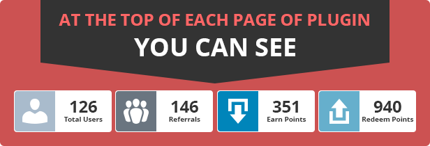
At the top of each page of plugin you can see
-
Total registered users on the website.
-
Total users who joined the referral program.
-
The total earned points by all users
-
Total spent/redeemed points by all users.
The administrator can easily see the latest statistics of registered referral and their earned credits along with the redeemed credits till the date.
In this page admin can see all the user who joined the referral program.
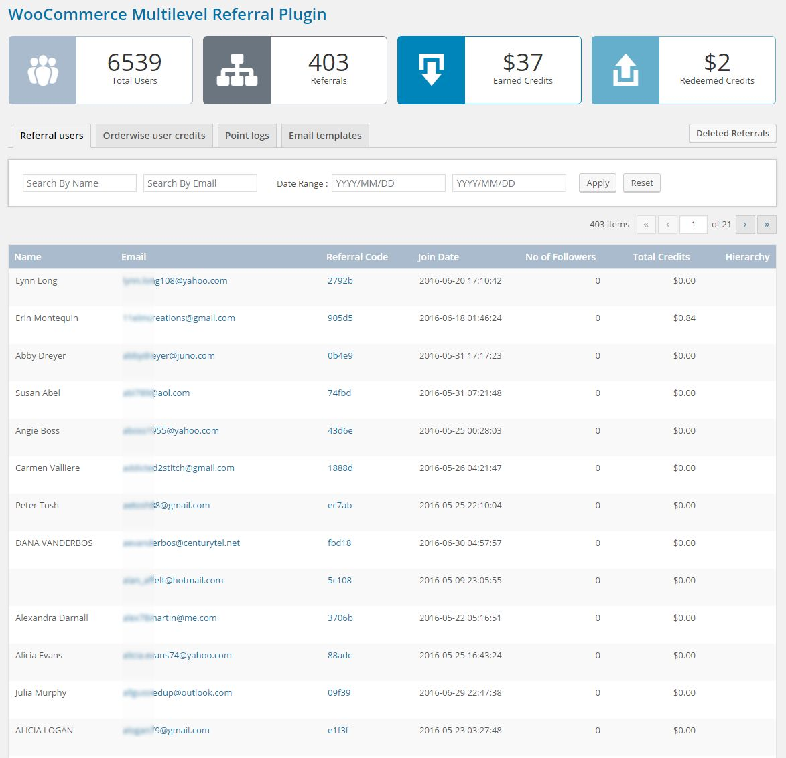
They can see following details …
-
Name : Name of the referral User.
-
E-mail : Email Address of user
-
Referral Code : Autogenerated referral code. It is unique for each user
-
Join Date : The date of joining of the referral program.
-
No. of followers : This is a count of users who joined referral program using the respective users referral code.
-
Total Credits: Display total earned credit points.
-
Hierarchy: By clicking on this icon admin can see the list of the followers of the respective user.
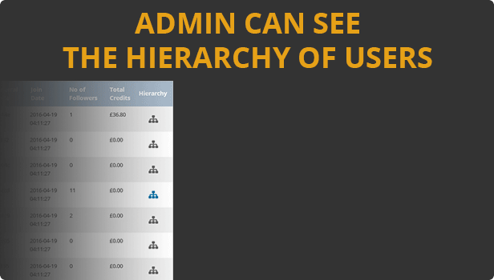
Here, admin (Store owner) can able to see the credit points earned against the each order placed by the referral user.
-
Order : Shows order number.
-
Customer Name : Name of customer who placed the order.
-
Earned Credits: Credit points earned by the customer against this order.
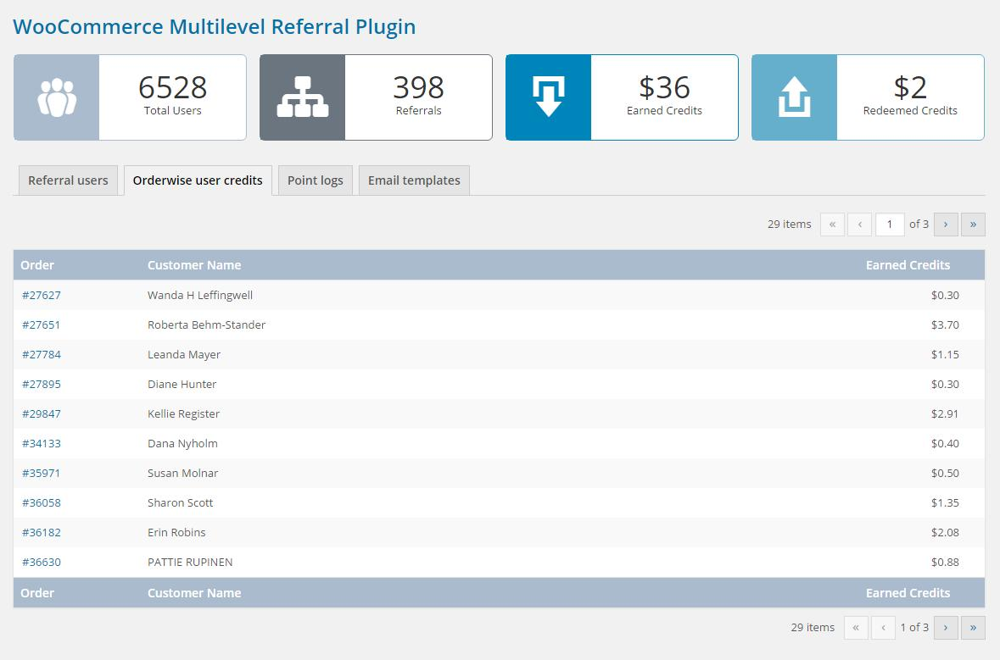
Here, Admin can see the list of credit points as well as redeemed points for each order placed.
-
Order : Shows order number.
-
Name : Name of customer who placed the order.
-
Earned Credits: Credit points earned by the customer against this order.
-
Redeemed Credits : If customer redeemed any points for the respective order then it will display here.
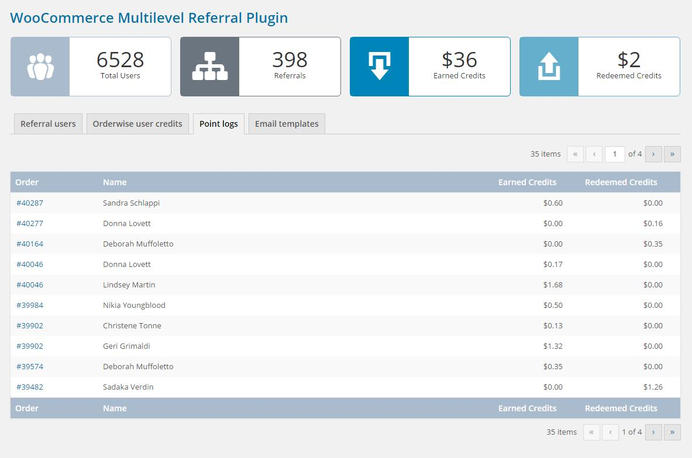
The plugin sends the notification to users when they join referral program, invite their friends to join program and credit points expiration notice.
Placeholders to replace values at the run time in the email:
-
{referral_code} – Replace respective referral code of user
-
{available_credits} – Replace respective user credits.
-
{first_name} – Replace respective user name.
-
{last_name} – Replace respective user name.
-
{expire_date} – Replace respective expiry date of user credits.
-
{validity_period} – Replace respective store credit validity.
-
{today_date} – Replace respective current date.
-
{expire_month} – Replace respective credit expired month.
-
{expire_credits} – Replace respective expired credits.
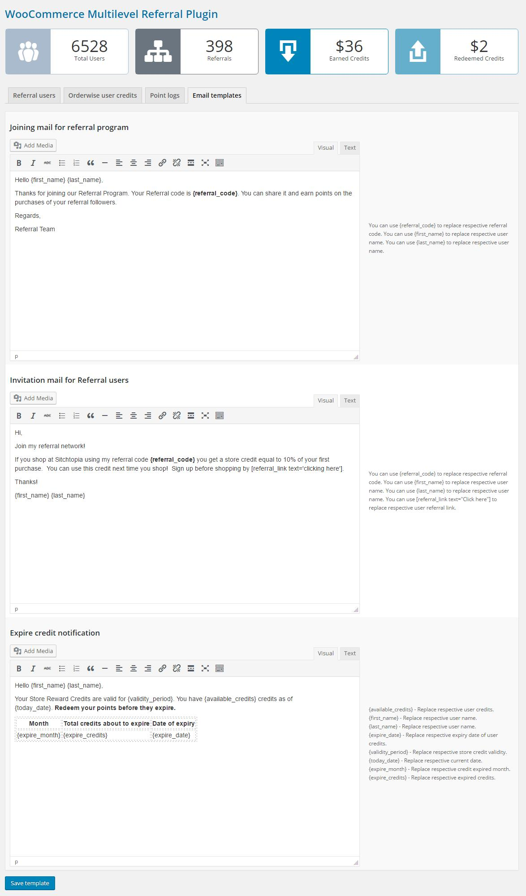
-
Joining mail for referral Program: Admin/Store owner can customize the content of mail which will be sent when a user joins the referral program.
-
Invitation Mail for referral Users : Users can send the invitation mail to their friends from the plugin. The content of this mail can be customized from here.
-
Expire Credit information: Credit points are expired if they are never used between the defined time limit. The notification email will be sent to the user before they expire so a user can take benefit of these points. Admin can customize the content of this email from here.
The users/customers can join referral program in two ways…
-
Auto Join
-
If administrator set "Auto join" feature then users will automatically join referral program after registration.
-
Manual Joining
-
Registration page
-
Customers can see join referral program option from the woo commerce user registration page.
-
Customers can join referral program by using referral code of other users, or directly can become an affiliate
-
The terms and conditions should be accepted by the user to join the referral program.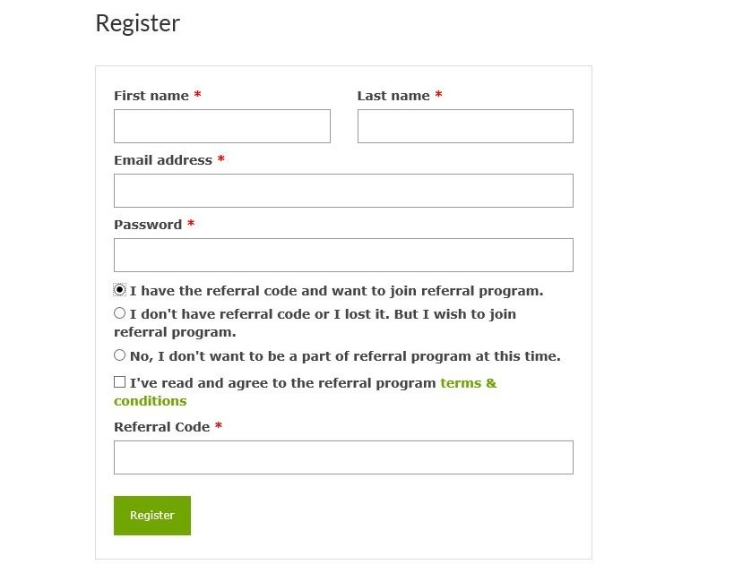
-
My Account Page/ Profile page
-
If users have not joined the referral program at the time of registration then there is no need to worry. We have added the option in My account page to join the referral program. So users can join referral program at any given juncture.
-
Customers can join referral program by using referral code of other users, or directly can become an affiliate
-
The terms and conditions should be accepted by the user to join the referral program.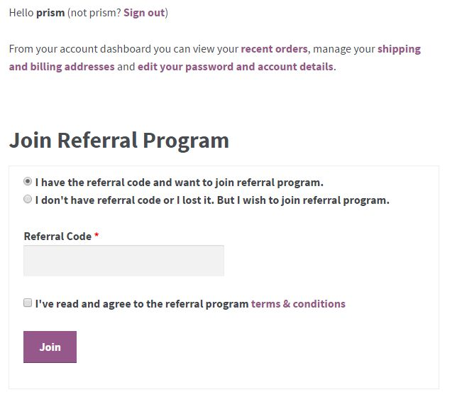
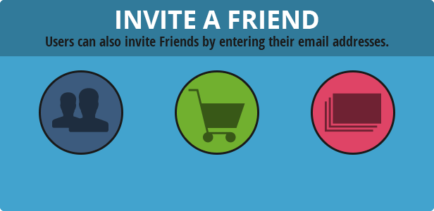
Users must have to login into the store to invite their friends. In the Profile Page/ My account Page, they can see the option to invite friends. They can add multiple email addresses of their friends and send invites.
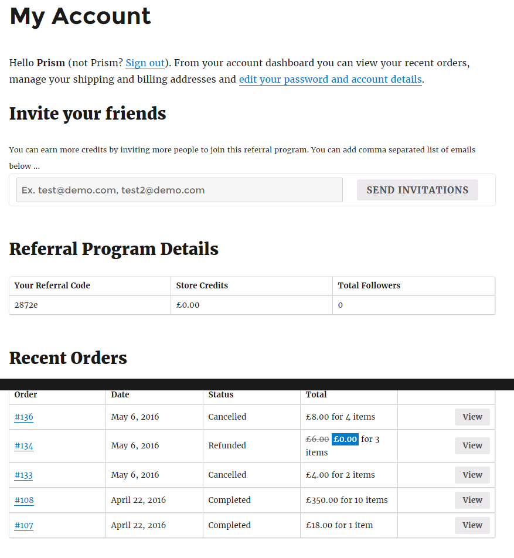
On my account page, users can see the history of earned credits as well as their own number of followers. They can even invite others to join the referral program.
Users can redeem points on the cart page, If the user has some credit points then a system will notify user to redeem the points. If the user wishes to redeem the points then they can click on “use it now” link provided. It will reveal a form which has the input box to enter a number of points. The user can enter a number of points and click on APPLY button to redeem the points. If entered points are less than equal to the available points then the respective amount will be deducted from the cart amount.
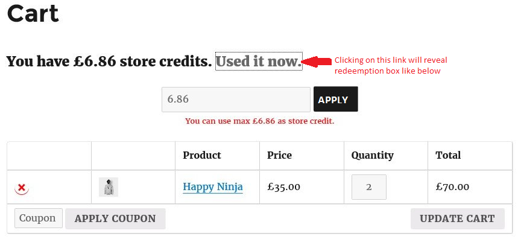